横たわる 命を照らす ハイビーム
事故防止 一人一人が 責任者
シートベルト 命を守る お声掛け
見て、待って、自転車、二輪車、譲って防げ事故防止
後ろ側 見えてなければ 降りて見る
駐停車 まずは確認 Pレンジ
交差点 減速確認 再確認
このページをシェアするためのQRコード
スマートフォンのカメラでQRコードを読み取ってください
「未収伝票」欄の空欄の得意先名に使用者名またはチケット名や福祉券名を記入
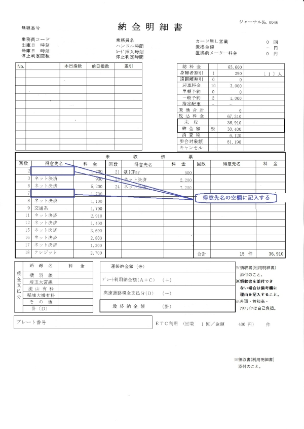
「未収伝票」欄の金額をもらった金額に訂正し【合計】【未収】【納金額】も訂正する
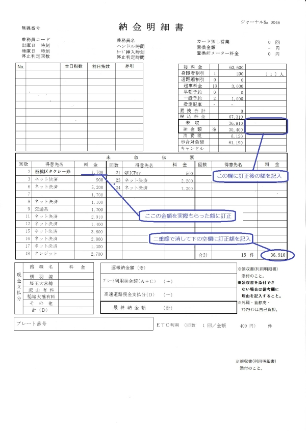
「未収伝票」空欄に手書きで追記し【合計】【未収】【納金額】も訂正する
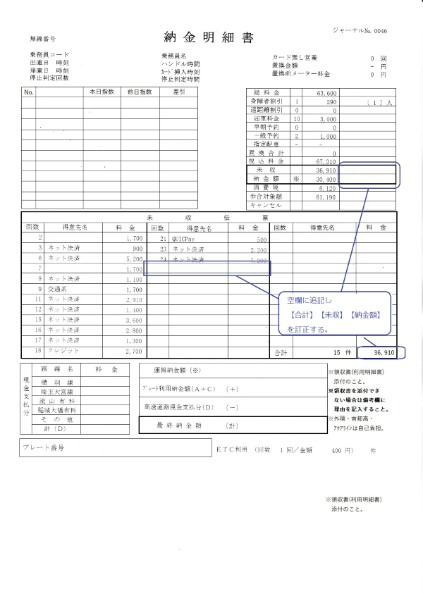
手書きでキャンセル欄に【営業回数（〇で囲む）】【400（迎車料金）】の書式で記入
【納金額】を訂正する
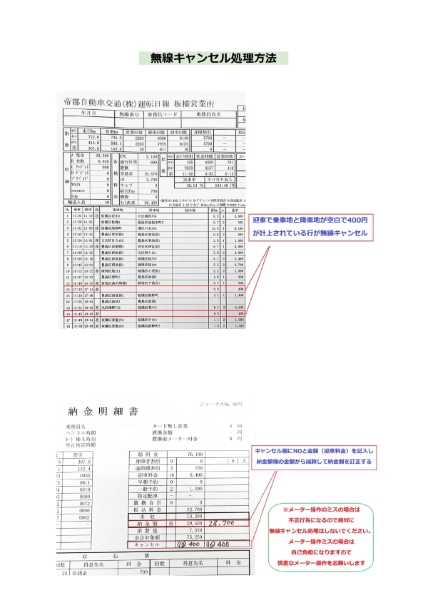
GOアプリ関連はすべて空転処理をする
キャンセル処理は不正
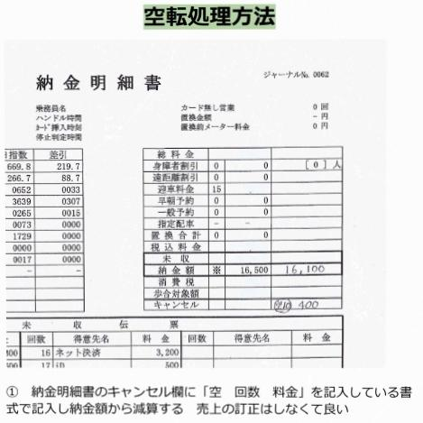
メーターの押し間違いはすべて自己負担
慎重なメーター操作が必須
キャンセルまたは空転処理は不正
ETC利用明細書の自己負担分に首都高速会社負担分一覧表を参照し対象が含まれているか確認する
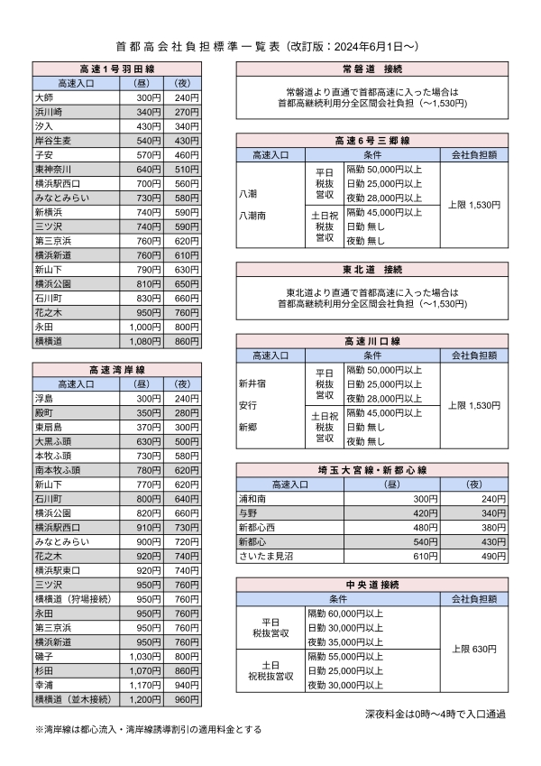
首都高速会社負担分が含まれている場合は専用の申請書で会社負担分を計算して記入
（売上条件がある、中央道接続・三郷、川口線と売上条件が無いその他の三種類の申請書がある）
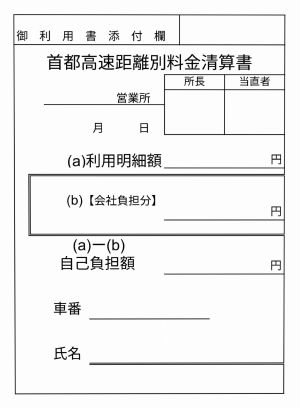
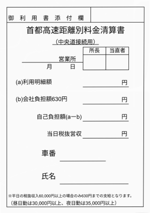
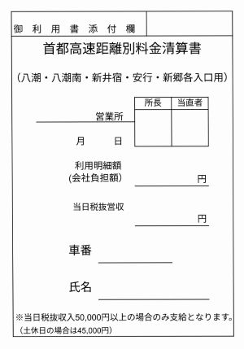
その際ETC利用明細書は訂正しないで利用した際のレシートと申請書をクリップでETC利用明細書に添付する
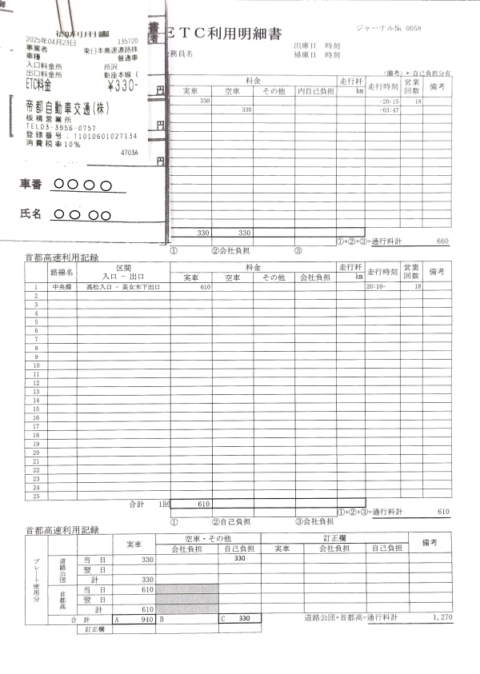
ETC利用明細書を参照し【高速道路利用明細】の【合計】欄のAとCの合計を納金明細書の下段【プレート利用納金額】欄に(A+C)=合計金額の書式で記入、会社負担分がある場合は【高速道路現金支払分】欄に額を記入する
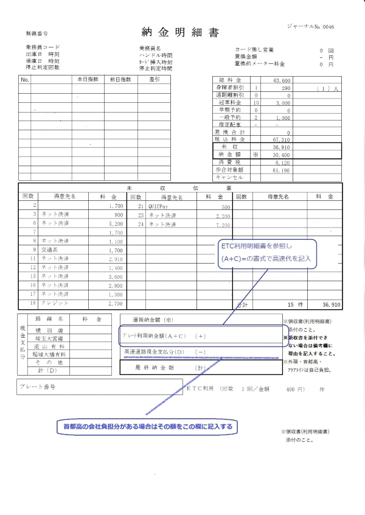